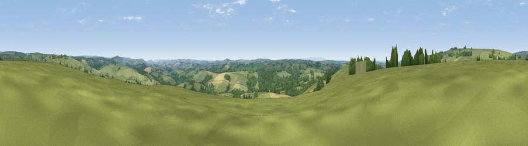

Viewpoint near East Anstey
#12871 in England · top 23% of its area beats it · near East Anstey · access?Where it is
The exact computed spot (SS 88025 27175). Click the marker for map links.
Public access: no public right of way or access land is recorded at this exact spot — it may be on private land. Computed from Natural England's CRoW access layer and OpenStreetMap rights of way — not the legal definitive map. Always verify locally.
The view, rendered

A 360° render of this exact spot computed from the terrain model, tree cover and land cover — summer colours, afternoon light, calibrated against photographs of famous viewpoints. Real trees, hedges and buildings will differ in detail.
The panorama
Grey silhouette: terrain skyline in each direction (720 bearings, Earth curvature and refraction included). Dashed green: skyline with trees (+15 m) and buildings (+8 m) as obstacles. Blue strip: how far the ground is visible on each bearing.
Where the view opens
Wedge length = distance to the farthest visible ground on that bearing (vegetation-aware). Rings at 10, 25 and 50 km.
What fills the view
76% grassland · 19% woodland · 5% cropland
Angular shares of the visible panorama (visual magnitude), not map area. Landscape diversity 0.30 (0–1 Shannon).
Key numbers
More beautiful places nearby
The staircase of upgrades: each row has a higher view potential than everything closer. Driving times are estimates from straight-line distance, calibrated against real road routing — check an actual route before setting out.
| Place | Direction | Drive | Score |
|---|---|---|---|
| Viewpoint near West Anstey | NW · 2 km | ~6 min | 65.8 |
| Winsford Hill | N · 7 km | ~14 min | 66.0 |
| Viewpoint near Skilgate | ENE · 8 km | ~16 min | 72.5 |
| Viewpoint near Luxborough | NE · 12 km | ~23 min | 73.5 |
| Viewpoint near Luccombe | N · 14 km | ~26 min | 84.5 |
| Viewpoint near Luccombe | N · 16 km | ~28 min | 84.6 |
| Viewpoint near Luxborough | NE · 17 km | ~30 min | 85.5 |
| Viewpoint near Porlock | N · 19 km | ~33 min | 86.3 |
51.03299, -3.59828 · source: screening · position refined by local search. Computed location — check access rights before visiting.